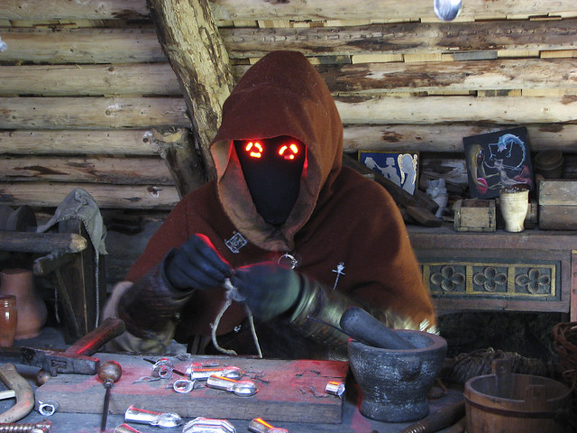

|
My Work, Past, Present... Future? |
|
 On this page, you can read about my work, past, and present. My work ethic is this: work in what I like, but never be satisfied, in both work conditions and compensation, thus always improve. That one works in what one likes doesn't mean that one should settle. I had many low-end jobs throughout my life, like working for a car wash, being a messenger, as an assistant landscaper, a flyer distributor, or a dishwasher in a bar, but I don't want to stir that old boring crap uselessly. The most dignified job I had as an employee was as a metallurgic worker in a speakers factory. Most of the time I had to work with metal, but it also involved a bit of working with plastic. What the different tasks I did in that job had in common was that I was always working with machines. Machines that had the potential, maybe not of killing me, but of mauling me and leaving me as a cripple for life. I remember that in that factory I used to manufacture plastic pieces by injection, drill washers or whatever is called the big washer thingy speakers have (I forgot its name), ply big metal sheets, cut and perforate metal sheets with small and big hydraulic presses, weld with spot welders, and weld with an ultrasonic plastic welder. That job as a metallurgic worker was fun, but the pay and the environment (read bosses and co-workers) did leave lots to be desired. The best thing I learned working nine to five in that factory was that I wasn't cut for that. Not the manly, dangerous work, but the daily and monotonous, dead-end grind. When I decided to take responsibility for my work, I worked for many years as a computer fixer. It was easy and paid okay, but it carried a lot of responsibility and risk. When I worked as a computer fixer I was always scared that some hardware that was only slightly broken, or malfunctioning at the logic level only, would totally die while I was fixing it, or while I had it at my place, and that not only I would receive no pay, I would have to actually pay the client for the broken goods. That situation of things going from bad to worse occurred to me before, with my own hardware, and the fear that it would happen with a client's equipment was a constant source of stress and worry. Another thing that I was always scared of was a very unfair thing that had happened to me with my own hardware and a few times when I fixed the computers of family and friends. This was a bad luck situation of fixing a computer, and the next day, or the day after that, getting news that the PoS device had worked okay for a short while, and then died completely. Don't get me wrong, in each job I did as a computer fixer I had the greatest confidence, and I never failed a job. You could say that my part in computer fixing situations was all the time stellar. What wasn't stellar were the clients I had. Most were penny-pinching old men that held on to old trash that should have been part of the landfill a long time ago. Right now I'm working as an internet communicator for three websites. One of them is my horror genre website Shock Depot. Soon is going to be two years since I launched it, yet I haven't really started working on its monetization. It took me two years of part-time work to figure out all the technological stack, so as to be able to operate it without trouble. To work as a communicator you need to wear many hats. I am able to say that I enjoy all of them, even if some are a bit challenging for me. What's most challenging for me is that as long as I'm feeding the sites and making them grow, or promoting them on the web, everything is alright. But when I have to streamline monetizations into them the guilt kicks in. Guilt that in some way the work for the horror community I'm doing ceases to be a labor of love and the expression of my enthusiasm for horror, and becomes just a business. I would love to work in something that is directly related to horror but more than just a web business, like owning and operating a horror amusement facility. Also, I would like to work doing something artistic, dealing with artists, and related to artistic events. I haven't decided anything yet, and even if I did, both of these things aren't as easy as creating an internet startup, this requires very careful planning and a considerable amount of capital. © Bholenath Valsan 2022 — My Work [ Work ]
| [
Leisure ] | [ Art
] |
[ Personal Info ] | [ Social
Profiles ] | [ Links ] | [ Guestbook
] Thanks to all these persons, who kindly shared sourced media
with permissive CC licenses. IQRemix:
Rutherford Manor Haunt - Edmonton / Hans
Splinter: tinsmith at the midwinter fair / Stephen
Day: Haunted House / Boris
Kasimov: _BRK5851 (1) / waferboard:
red mask / JBLM
MWR: IMG_9246 / MockLogic:
Haunted TV / anna-maria v: haunted hause 2 / K
Tao: Souls of the Forsaken / Steve Snodgrass: Haunted House Ride / leKorbo.be: Kelgelbahn / Mel
Possehl: weathervane-191076_1280 / Lee
Russell: Abandoned Nursing HomeWork Ethic
Past Jobs I Had
Metallurgic Worker
Computer Fixer
In What Work I'm Involved Right Now
What Kind of Work I Would Like to Do

Media Credits